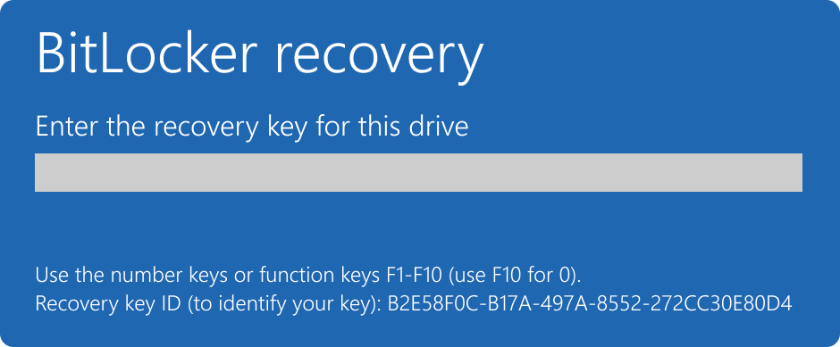
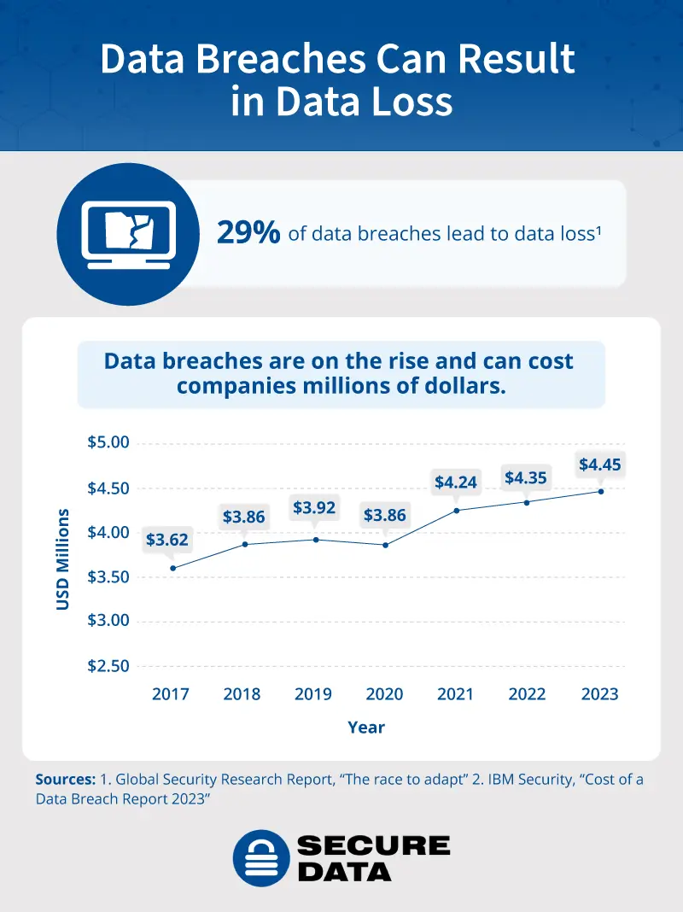

Why Encrypting Your Data is Crucial for Security
Data breaches and unauthorized access are becoming more common, putting sensitive information at risk. Encryption helps to protect your data by making it unreadable to unauthorized users. BitLocker, a built-in encryption feature in Windows, is a powerful tool for ensuring your data remains secure even if your device is lost or stolen.
Real-Life Incident
In 2021, a hospital experienced a data breach where sensitive patient information was leaked after laptops were stolen. Devices without encryption left data vulnerable, leading to severe consequences. By using BitLocker encryption, the risk of such breaches could have been mitigated.
Risks of Not Using Encryption
Leaving your data unencrypted can expose you to various risks, including:
- Unauthorized access to sensitive files if your device is lost or stolen.
- Increased vulnerability to ransomware attacks.
- Higher risk of data breaches and identity theft.
- Legal and regulatory consequences if personal or business data is compromised.
How to Enable BitLocker in 4 Easy Steps
Instructions:
- Click the Start button or press the Windows key on your keyboard.
- Type "Control Panel" in the search bar and press Enter.
- Select "System and Security" from the options displayed.

Instructions:
- In the System and Security section, click on "BitLocker Drive Encryption".
- Identify the drive you want to encrypt (usually the C: drive) and click on "Turn on BitLocker".

Instructions:
- You can unlock your drive with a password or a smart card. Choose your preferred option.
- If you choose a password, enter it and confirm it in the provided fields.

Instructions:
- It’s crucial to backup your recovery key. You can save it to your Microsoft account, a USB drive, or print it for safekeeping.
- Choose an option and follow the prompts to complete the backup.